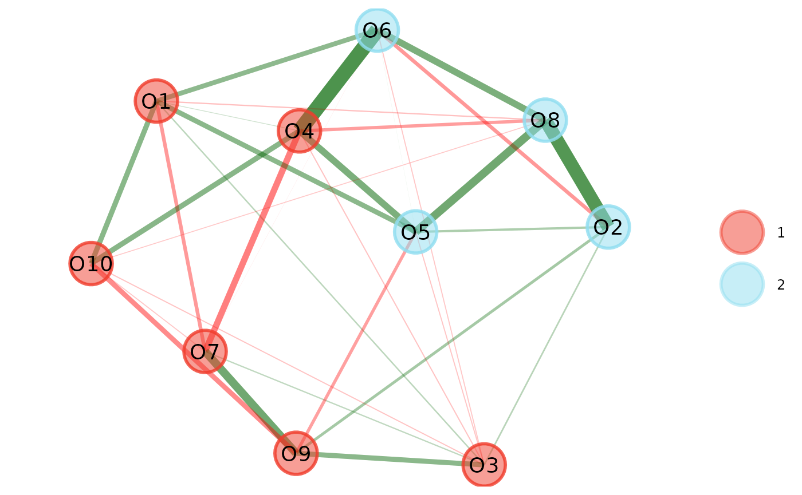

For every function in {EGAnet}, there are built-in data checks that may sometimes throw an error. Errors in R can be cryptic and {EGAnet} tries to help out by having some systematic errors that are a bit more user-friendly.
This guide is aimed at making the data check errors that {EGAnet} throws more transparent. Below are some common data check errors. If you find one of these errors, then please do not submit a bug report – these errors are by design! Try to fix whatever the error is telling you as it is likely something quick that can be handled in your data.
“range” Error
A range error is when a function receives data (numeric values) that
are outside of the expected range of values. This error most frequently
occurs with polychoric.matrix in
auto.correlate because of the underlying C code.
To set up an example, we’ll recode the optimism dataset to be on a 5-point Likert scale from -2 to 2 rather than 1 to 5:
# Load {EGAnet}
library(EGAnet)
# Recode the optimism dataset
optimism_recoded <- apply(optimism, 2, function(x){x - 3})
# Estimate EGA
ega_optimism <- EGA(data = optimism_recoded)Error in "polychoric.matrix" :
Minimum value of 'data' (-2) does not match expected range(s). Values must range between: '0' and '11'
For more details on how to fix this error, see:
https://r-ega.net/articles/errors.html#range-errorThe error specifies that the issue occurred in the
polychoric.matrix function. The error says that there are
data with a minimum value of -2 in the dataset when the
function expects a minimum value to be 0.
Without getting bogged down in the details, the
polychoric.matrix function is fast and efficient for
computing polychoric correlations, but in order to make it so, it needs
to take advantage of clever indexing. In C, indices start at
0, so any values lower than 0 means that the
data need to be re-indexed so that the lowest value is 0
(and the highest value, if applicable, is 11).
To fix this issue, you can recode your data:
# Get the minimum value
minimum_value <- min(optimism_recoded, na.rm = TRUE)
# Print value
minimum_value[1] -2
# Recode the values to start at zero
optimism_fixed <- apply(
optimism_recoded, 2, function(x){
x + abs(minimum_value)
}
)
# Estimate EGA
ega_optimism <- EGA(data = optimism_fixed)
By recoding the lowest value to 0, the error goes away
and EGA executes successfully.
“class” Error
A class error is when a function receives a class it does not expect:
# Estimate EGA
ega_optimism <- EGA(data = optimism)
# Compute the Generalized Total Entropy Fit Index
genTEFI(ega_optimism)Error in "genTEFI" :
Input into 'data' is an object with 'EGA' class(es). Input is expected to be 'hierEGA' class(es)
For more details on how to fix this error, see:
https://r-ega.net/articles/errors.html#class-errorThe genTEFI function expects a hierEGA
class but it received an EGA class object. This error means
that the wrong object class was used with the function.
“object” Error
A object error is when a function receives a object that it is not designed to handle:
Error in "EGA" :
Input into 'data' is a 'list' object. Input is expected to be 'matrix', 'data.frame', 'tibble' object
For more details on how to fix this error, see:
https://r-ega.net/articles/errors.html#object-errorHere, EGA expects to receive a matrix, data frame, or
tibble but the input was a list. The data will need to be converted to
one of these three object types before proceeding with the analysis.
“typeof” Error
A typeof error is when a function receives data that is not in the expected type:
# Estimate EGA using a character TRUE
opt.hier <- EGA(data = optimism, plot.EGA = "TRUE")Error in "EGA" :
Input into 'plot.EGA' is 'character' type. Input is expected to be 'logical' type
For more details on how to fix this error, see:
https://r-ega.net/articles/errors.html#typeof-errorIn this example, EGA expected input into the argument
plot.EGA to be a logical (TRUE or
FALSE) but instead got a character "TRUE". The
error tells you that the input is expected to be logical.
“length” Error
A length error is when a function receives input that is longer (or shorter) than expected:
Error in "EGA" :
Length of 'plot.EGA' (2) does not match expected length(s). Length must be: '1'
For more details on how to fix this error, see:
https://r-ega.net/articles/errors.html#length-errorThis time for the plot.EGA argument the correct type of
input was used (logical) but there were too many input. The
(2) says that the argument received two inputs when it
expected only 1.
None of the Above
If you’ve made it this far and none of the above errors apply, then submit an issue on GitHub.
Make sure to provide a minimal reproducible example (like those demonstrated above) and send any data necessary to expedite the process of getting the error fixed.